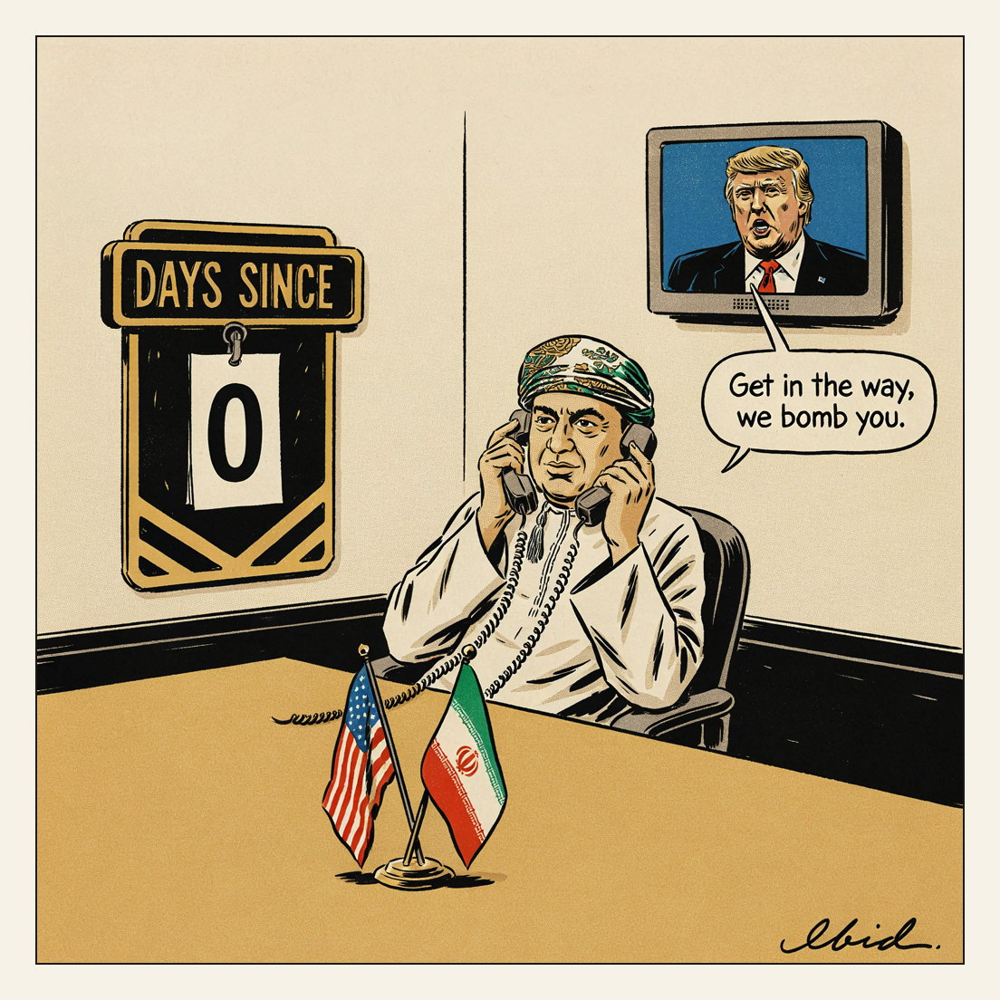

Partner outreach.
Days Since

Donald Trump told Fox News that the United States will bomb Oman if it “gets in the way” of ending the Iran war, his second threat against Muscat. Oman, a U.S. strategic partner of 5.3 million people, is not a party to the war and has served as Washington’s main backchannel to Tehran; Iran’s foreign ministry said Monday that talks through Oman were continuing. The 60-day negotiating window signed with Iran at Versailles on 17 June expired Monday without a deal.